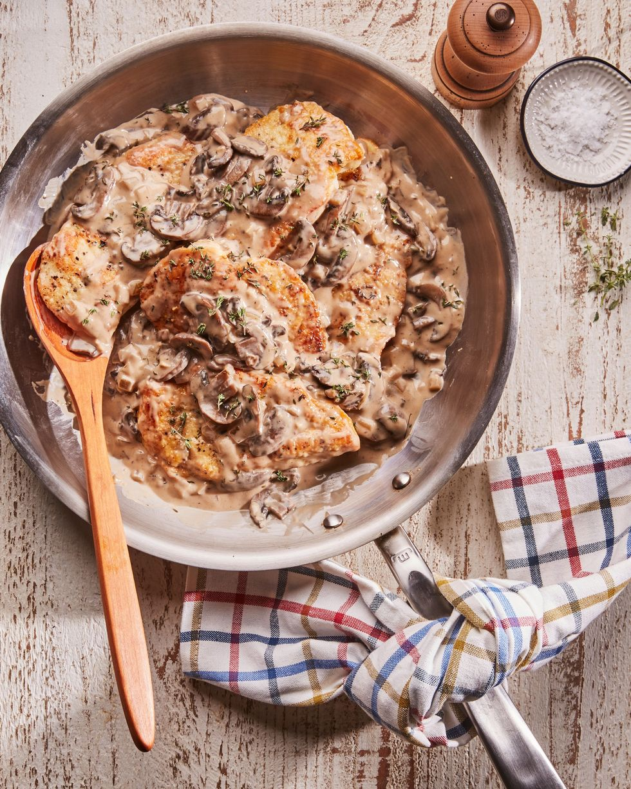

Fast Easy Chicken Marsala

Ingredients
- 2 cloves garlic, chopped
- 1/2 c.dry Marsala wine
- 3/4 c.chicken stock
- 1/2 c.heavy cream
- 1 tsp.fresh thyme, plus more for garnish
Directions
- Step 1
Place flour in a shallow bowl. Use a meat tenderizer or the bottom of a sturdy cup to pound chicken to about 1/4 inch thick. Season with salt and pepper. Dredge chicken in flour, turning to coat all sides. Heat oil in a medium skillet over medium-high heat.
Cook chicken in batches, turning once, until golden brown, 3 to 4 minutes. Transfer to a plate and tent to keep warm. Reserve skillet
Step 2
Pour off oil from skillet. Melt butter in skillet over medium heat. Add mushroom and onions. Season with salt and pepper. Cook, stirring occasionally, until tender, 5 to 7 minutes. Add garlic and cook, stirring, until fragrant, 2 to 3 minutes. Add wine, stock, cream, and thyme.
Simmer, stirring occasionally, until thickened, 14 to 16 minutes. Season with salt and pepper. Return chicken to pan and toss to coat. Serve immediately garnished with thyme.
Return